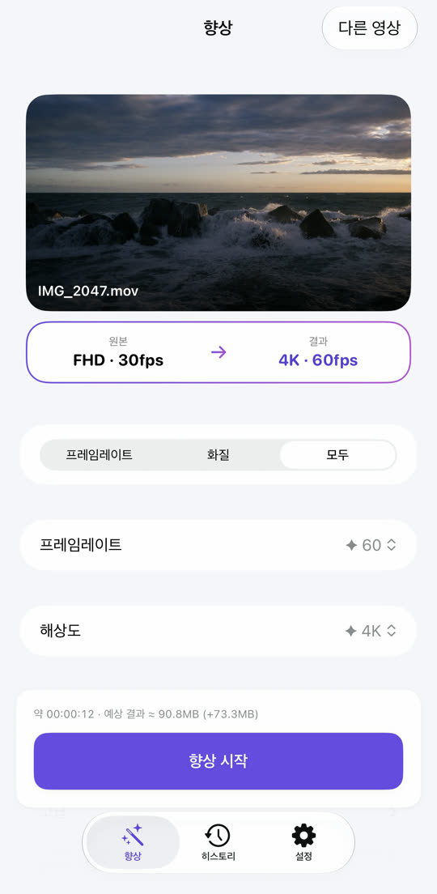
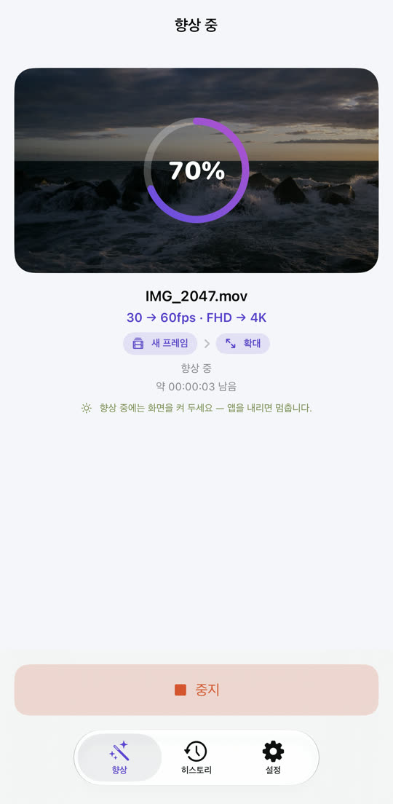
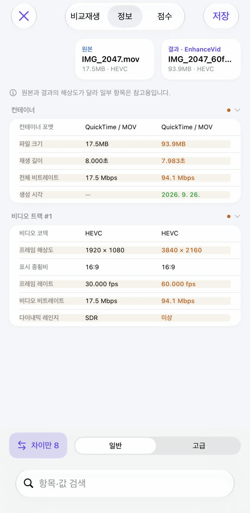
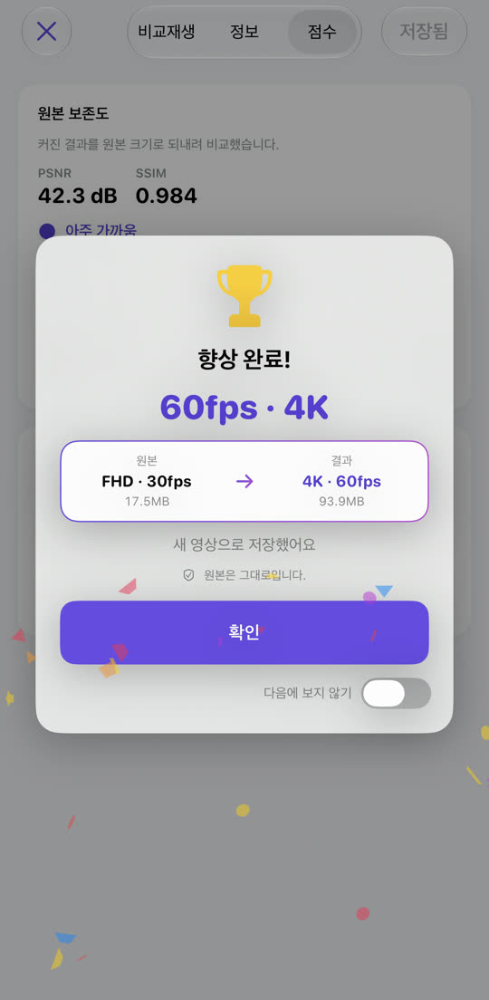

EnhanceVid
끊기던 영상은 부드럽게,
흐릿한 영상은 선명하게.
30fps를 60fps로, FHD를 4K로. 프레임 사이에 새 프레임을 만들어 넣고, 해상도를 올려 또렷하게 — 모든 처리는 내 iPhone 안에서 하고, 원본은 그대로 둔 채 새 영상으로 저장합니다.
App Store에서 다운로드무료 · iOS 26 이상 · iPhone · iPad · Apple 실리콘 Mac

흐릿함은 걷고, 또렷하게.
Apple MetalFX 업스케일로 해상도를 올립니다. 가운데 선을 좌우로 밀어 비교해 보세요.

 원본향상
원본향상
⇆
예시 이미지 — 낮은 해상도 원본을 크게 키운 모습과 향상한 모습을 나란히 보였습니다.
뚝뚝 끊기던 움직임이 매끄럽게.
원본 프레임 사이에 새 프레임을 계산해 넣습니다. 장면이 바뀌는 곳은 억지로 섞지 않아 어색한 잔상이 생기지 않습니다.
30fps
60fps
움직임 차이를 알아보기 쉽게 과장해 보였습니다.
고르고, 시작하고, 비교하고, 저장.



필요한 건 다 들어 있습니다.
노이즈 줄이기
어두운 곳에서 찍은 자글자글한 영상을 깨끗하게. 지원하는 기기에서 켜집니다.
위아래 자유롭게
4K 60fps를 30fps로, 4K를 FHD로. 내리는 것도 고를 수 있습니다.
눈으로 비교
나란히 재생, 사양 표, 화질 점수(PSNR·SSIM, 원하면 VMAF).
HDR 그대로
iPhone으로 찍은 HDR·Dolby Vision 영상은 결과도 HDR입니다.
다양한 파일
사진 보관함과 파일 앱의 영상, MKV·WebM·AVI도 처리합니다.
원본은 그대로
결과는 원본 옆에 새 영상으로 저장합니다. 원본을 바꾸거나 지우지 않습니다.
내 영상은 내 기기에만
영상은 어디로도 업로드되지 않습니다. 계정도 필요 없습니다. 무료이며 광고로 운영됩니다 — 개인정보